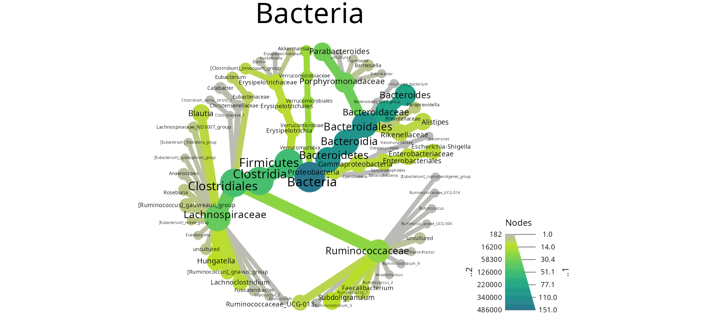
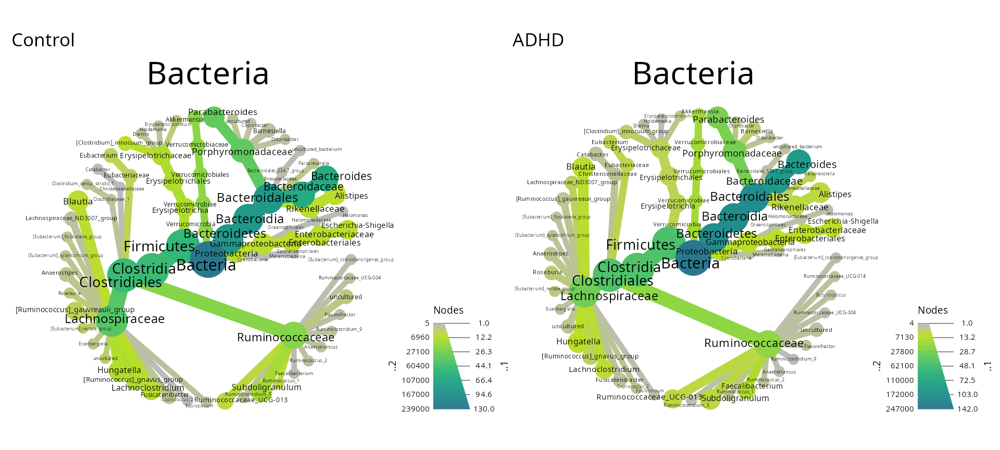

This tutorial explore a phyloseq version of the dataset from Tengeler
et al. (2020) available in the mia package.
Load library
library("MicrobiotaProcess")
library("MiscMetabar")
library("ggplot2")
library("patchwork")
library("iNEXT")
?Tengeler2020
Alpha-diversity analysis
hill_pq(ten, "patient_status", one_plot = TRUE)
res_inext <-
iNEXT_pq(ten,
datatype = "abundance",
merge_sample_by = "patient_status_vs_cohort",
nboot = 5
)
ggiNEXT(res_inext)
accu_plot(
ten,
fact = "sample_name",
add_nb_seq = TRUE,
by.fact = TRUE,
step = 100
) + theme(legend.position = c(.8, .6))
#> Warning in vegan::rarefy(as.matrix(unclass(x[i, ])), n, se = TRUE): most
#> observed count data have counts 1, but smallest count is 9
#> Warning in vegan::rarefy(as.matrix(unclass(x[i, ])), n, se = TRUE): most
#> observed count data have counts 1, but smallest count is 17
#> Warning in vegan::rarefy(as.matrix(unclass(x[i, ])), n, se = TRUE): most
#> observed count data have counts 1, but smallest count is 25
#> Warning in vegan::rarefy(as.matrix(unclass(x[i, ])), n, se = TRUE): most
#> observed count data have counts 1, but smallest count is 7
#> Warning in vegan::rarefy(as.matrix(unclass(x[i, ])), n, se = TRUE): most
#> observed count data have counts 1, but smallest count is 8
#> Warning in vegan::rarefy(as.matrix(unclass(x[i, ])), n, se = TRUE): most
#> observed count data have counts 1, but smallest count is 6
#> Warning in vegan::rarefy(as.matrix(unclass(x[i, ])), n, se = TRUE): most
#> observed count data have counts 1, but smallest count is 14
#> Warning in vegan::rarefy(as.matrix(unclass(x[i, ])), n, se = TRUE): most
#> observed count data have counts 1, but smallest count is 28
#> Warning in vegan::rarefy(as.matrix(unclass(x[i, ])), n, se = TRUE): most
#> observed count data have counts 1, but smallest count is 3
#> Warning in vegan::rarefy(as.matrix(unclass(x[i, ])), n, se = TRUE): most
#> observed count data have counts 1, but smallest count is 7
#> Warning in vegan::rarefy(as.matrix(unclass(x[i, ])), n, se = TRUE): most
#> observed count data have counts 1, but smallest count is 2
#> Warning in vegan::rarefy(as.matrix(unclass(x[i, ])), n, se = TRUE): most
#> observed count data have counts 1, but smallest count is 15
#> Warning in vegan::rarefy(as.matrix(unclass(x[i, ])), n, se = TRUE): most
#> observed count data have counts 1, but smallest count is 5
#> Warning in vegan::rarefy(as.matrix(unclass(x[i, ])), n, se = TRUE): most
#> observed count data have counts 1, but smallest count is 5
#> Warning in vegan::rarefy(as.matrix(unclass(x[i, ])), n, se = TRUE): most
#> observed count data have counts 1, but smallest count is 3
#> Warning in vegan::rarefy(as.matrix(unclass(x[i, ])), n, se = TRUE): most
#> observed count data have counts 1, but smallest count is 6
#> Warning in vegan::rarefy(as.matrix(unclass(x[i, ])), n, se = TRUE): most
#> observed count data have counts 1, but smallest count is 3
#> Warning in vegan::rarefy(as.matrix(unclass(x[i, ])), n, se = TRUE): most
#> observed count data have counts 1, but smallest count is 4
#> Warning in vegan::rarefy(as.matrix(unclass(x[i, ])), n, se = TRUE): most
#> observed count data have counts 1, but smallest count is 6
#> Warning in vegan::rarefy(as.matrix(unclass(x[i, ])), n, se = TRUE): most
#> observed count data have counts 1, but smallest count is 3
#> Warning in vegan::rarefy(as.matrix(unclass(x[i, ])), n, se = TRUE): most
#> observed count data have counts 1, but smallest count is 3
#> Warning in vegan::rarefy(as.matrix(unclass(x[i, ])), n, se = TRUE): most
#> observed count data have counts 1, but smallest count is 21
#> Warning in vegan::rarefy(as.matrix(unclass(x[i, ])), n, se = TRUE): most
#> observed count data have counts 1, but smallest count is 5
#> Warning in vegan::rarefy(as.matrix(unclass(x[i, ])), n, se = TRUE): most
#> observed count data have counts 1, but smallest count is 13
#> Warning: A numeric `legend.position` argument in `theme()` was deprecated in ggplot2
#> 3.5.0.
#> ℹ Please use the `legend.position.inside` argument of `theme()` instead.
#> This warning is displayed once every 8 hours.
#> Call `lifecycle::last_lifecycle_warnings()` to see where this warning was
#> generated.
#> Warning: Removed 1 row containing missing values or values outside the scale range
#> (`geom_line()`).
Explore taxonomy
library(metacoder)
heat_tree_pq(ten,
node_size = n_obs,
node_color = nb_sequences,
node_label = taxon_names,
tree_label = taxon_names,
node_size_trans = "log10 area"
)
treemap_pq(ten, lvl1 = "Order", lvl2 = "Family")
Beta-diversity analysis : effect of patient status and cohort
circle_pq(ten, "patient_status")
upset_pq(ten, "patient_status_vs_cohort")
ggvenn_pq(clean_pq(ten, force_taxa_as_columns = TRUE),
"cohort",
rarefy_before_merging = TRUE
) +
theme(legend.position = "none")
ten_control <- clean_pq(subset_samples(ten, patient_status == "Control"))
p_control <- heat_tree_pq(ten_control,
node_size = n_obs,
node_color = nb_sequences,
node_label = taxon_names,
tree_label = taxon_names,
node_size_trans = "log10 area"
)
ten_ADHD <- clean_pq(subset_samples(ten, patient_status == "ADHD"))
p_ADHD <- heat_tree_pq(ten_ADHD,
node_size = n_obs,
node_color = nb_sequences,
node_label = taxon_names,
tree_label = taxon_names,
node_size_trans = "log10 area"
)
p_control + ggtitle("Control") + p_ADHD + ggtitle("ADHD")
knitr::kable(track_wkflow(list(
"All samples" = ten,
"Control samples" = ten_control,
"ADHD samples" = ten_ADHD
)))| nb_sequences | nb_clusters | nb_samples | |
|---|---|---|---|
| All samples | 485932 | 151 | 27 |
| Control samples | 239329 | 130 | 14 |
| ADHD samples | 246603 | 142 | 13 |
adonis_pq(ten, "cohort + patient_status")
#> Permutation test for adonis under reduced model
#> Permutation: free
#> Number of permutations: 999
#>
#> vegan::adonis2(formula = .formula, data = metadata)
#> Df SumOfSqs R2 F Pr(>F)
#> Model 3 1.2425 0.18483 1.7383 0.031 *
#> Residual 23 5.4799 0.81517
#> Total 26 6.7223 1.00000
#> ---
#> Signif. codes: 0 '***' 0.001 '**' 0.01 '*' 0.05 '.' 0.1 ' ' 1
ten@tax_table <- phyloseq::tax_table(cbind(
ten@tax_table,
"Species" = taxa_names(ten)
))
biplot_pq(subset_taxa_pq(ten, taxa_sums(ten) > 3000),
merge_sample_by = "patient_status",
fact = "patient_status",
nudge_y = 0.4
)
multitax_bar_pq(ten, "Phylum", "Class", "Order", "patient_status")
multitax_bar_pq(ten, "Phylum", "Class", "Order", "patient_status",
nb_seq = FALSE, log10trans = FALSE
)Differential abundance analysis
plot_deseq2_pq(ten,
contrast = c("patient_status", "ADHD", "Control"),
taxolev = "Genus"
)
#> Warning in DESeqDataSet(se, design = design, ignoreRank): some variables in
#> design formula are characters, converting to factors
LEfSe <- diff_analysis(
ten,
classgroup = "patient_status",
mlfun = "lda",
ldascore = 2,
p.adjust.methods = "bh"
)
library(ggplot2)
ggeffectsize(LEfSe) +
scale_color_manual(values = c(
"#00AED7",
"#FD9347"
)) +
theme_bw()
Session information
sessionInfo()
#> R version 4.4.1 (2024-06-14)
#> Platform: x86_64-pc-linux-gnu
#> Running under: Debian GNU/Linux 12 (bookworm)
#>
#> Matrix products: default
#> BLAS: /usr/lib/x86_64-linux-gnu/blas/libblas.so.3.11.0
#> LAPACK: /usr/lib/x86_64-linux-gnu/lapack/liblapack.so.3.11.0
#>
#> locale:
#> [1] LC_CTYPE=fr_FR.UTF-8 LC_NUMERIC=C
#> [3] LC_TIME=fr_FR.UTF-8 LC_COLLATE=fr_FR.UTF-8
#> [5] LC_MONETARY=fr_FR.UTF-8 LC_MESSAGES=fr_FR.UTF-8
#> [7] LC_PAPER=fr_FR.UTF-8 LC_NAME=C
#> [9] LC_ADDRESS=C LC_TELEPHONE=C
#> [11] LC_MEASUREMENT=fr_FR.UTF-8 LC_IDENTIFICATION=C
#>
#> time zone: Europe/Paris
#> tzcode source: system (glibc)
#>
#> attached base packages:
#> [1] stats graphics grDevices utils datasets methods base
#>
#> other attached packages:
#> [1] metacoder_0.3.7 iNEXT_3.0.1 patchwork_1.2.0
#> [4] MiscMetabar_0.9.3 purrr_1.0.2 dplyr_1.1.4
#> [7] dada2_1.32.0 Rcpp_1.0.13 ggplot2_3.5.1
#> [10] phyloseq_1.48.0 MicrobiotaProcess_1.16.1
#>
#> loaded via a namespace (and not attached):
#> [1] libcoin_1.0-10 RColorBrewer_1.1-3
#> [3] shape_1.4.6.1 rstudioapi_0.16.0
#> [5] jsonlite_1.8.8 magrittr_2.0.3
#> [7] TH.data_1.1-2 modeltools_0.2-23
#> [9] farver_2.1.2 rmarkdown_2.28
#> [11] GlobalOptions_0.1.2 fs_1.6.4
#> [13] zlibbioc_1.50.0 ragg_1.3.2
#> [15] vctrs_0.6.5 multtest_2.60.0
#> [17] Rsamtools_2.20.0 ggtree_3.12.0
#> [19] htmltools_0.5.8.1 S4Arrays_1.4.1
#> [21] ComplexUpset_1.3.3 Rhdf5lib_1.26.0
#> [23] SparseArray_1.4.8 rhdf5_2.48.0
#> [25] gridGraphics_0.5-1 sass_0.4.9
#> [27] bslib_0.8.0 htmlwidgets_1.6.4
#> [29] desc_1.4.3 plyr_1.8.9
#> [31] sandwich_3.1-0 zoo_1.8-12
#> [33] cachem_1.1.0 ggfittext_0.10.2
#> [35] GenomicAlignments_1.40.0 igraph_2.0.3
#> [37] lifecycle_1.0.4 iterators_1.0.14
#> [39] pkgconfig_2.0.3 Matrix_1.7-0
#> [41] R6_2.5.1 fastmap_1.2.0
#> [43] GenomeInfoDbData_1.2.12 MatrixGenerics_1.16.0
#> [45] digest_0.6.37 aplot_0.2.3
#> [47] colorspace_2.1-1 ggnewscale_0.5.0
#> [49] ShortRead_1.62.0 S4Vectors_0.42.1
#> [51] DESeq2_1.44.0 textshaping_0.4.0
#> [53] GenomicRanges_1.56.1 hwriter_1.3.2.1
#> [55] vegan_2.6-8 labeling_0.4.3
#> [57] fansi_1.0.6 httr_1.4.7
#> [59] abind_1.4-5 mgcv_1.9-1
#> [61] compiler_4.4.1 withr_3.0.1
#> [63] BiocParallel_1.38.0 highr_0.11
#> [65] ggsignif_0.6.4 MASS_7.3-61
#> [67] DelayedArray_0.30.1 biomformat_1.32.0
#> [69] permute_0.9-7 tools_4.4.1
#> [71] ape_5.8 glue_1.7.0
#> [73] treemapify_2.5.6 nlme_3.1-165
#> [75] rhdf5filters_1.16.0 grid_4.4.1
#> [77] cluster_2.1.6 reshape2_1.4.4
#> [79] ade4_1.7-22 generics_0.1.3
#> [81] gtable_0.3.5 tidyr_1.3.1
#> [83] ggVennDiagram_1.5.2 data.table_1.16.0
#> [85] coin_1.4-3 utf8_1.2.4
#> [87] XVector_0.44.0 BiocGenerics_0.50.0
#> [89] ggrepel_0.9.5 foreach_1.5.2
#> [91] pillar_1.9.0 stringr_1.5.1
#> [93] yulab.utils_0.1.7 circlize_0.4.16
#> [95] splines_4.4.1 treeio_1.28.0
#> [97] lattice_0.22-6 deldir_2.0-4
#> [99] survival_3.7-0 tidyselect_1.2.1
#> [101] locfit_1.5-9.10 pbapply_1.7-2
#> [103] Biostrings_2.72.1 knitr_1.48
#> [105] gridExtra_2.3 IRanges_2.38.1
#> [107] SummarizedExperiment_1.34.0 ggtreeExtra_1.14.0
#> [109] stats4_4.4.1 xfun_0.47
#> [111] Biobase_2.64.0 matrixStats_1.3.0
#> [113] stringi_1.8.4 UCSC.utils_1.0.0
#> [115] lazyeval_0.2.2 ggfun_0.1.6
#> [117] yaml_2.3.10 evaluate_0.24.0
#> [119] codetools_0.2-20 interp_1.1-6
#> [121] tibble_3.2.1 ggplotify_0.1.2
#> [123] cli_3.6.3 RcppParallel_5.1.9
#> [125] systemfonts_1.1.0 munsell_0.5.1
#> [127] jquerylib_0.1.4 GenomeInfoDb_1.40.1
#> [129] png_0.1-8 parallel_4.4.1
#> [131] ggh4x_0.2.8 pkgdown_2.1.0
#> [133] jpeg_0.1-10 latticeExtra_0.6-30
#> [135] bitops_1.0-8 ggstar_1.0.4
#> [137] pwalign_1.0.0 mvtnorm_1.3-1
#> [139] tidytree_0.4.6 GA_3.2.4
#> [141] scales_1.3.0 crayon_1.5.3
#> [143] rlang_1.1.4 multcomp_1.4-26References
Tengeler, A.C., Dam, S.A., Wiesmann, M. et al. Gut microbiota from persons with attention-deficit/hyperactivity disorder affects the brain in mice. Microbiome 8, 44 (2020). https://microbiomejournal.biomedcentral.com/articles/10.1186/s40168-020-00816-x